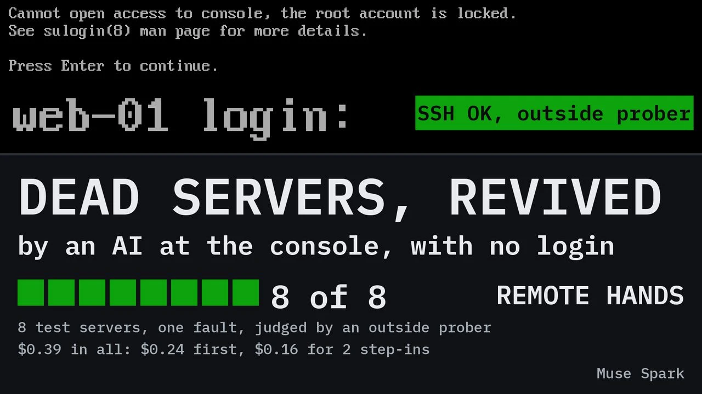
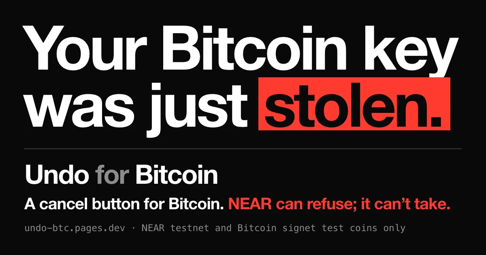
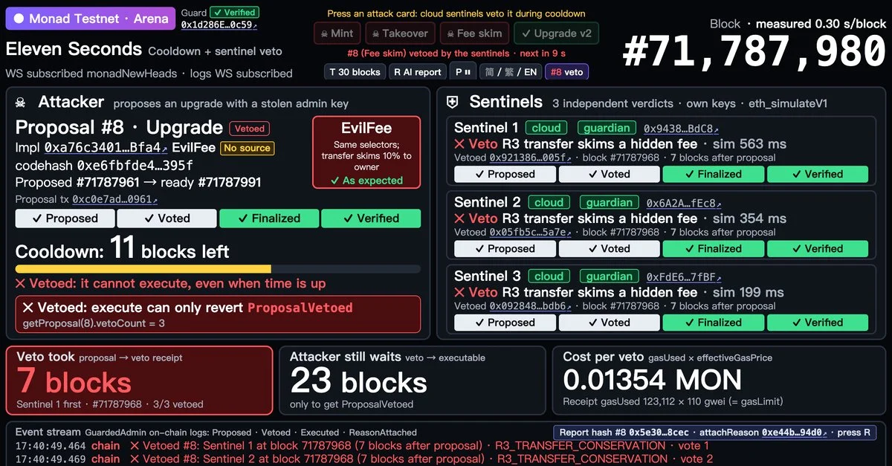
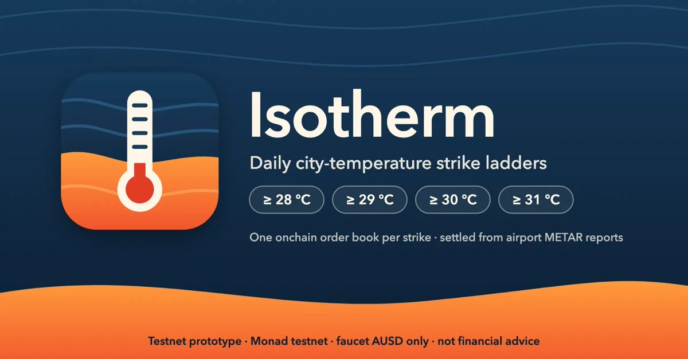
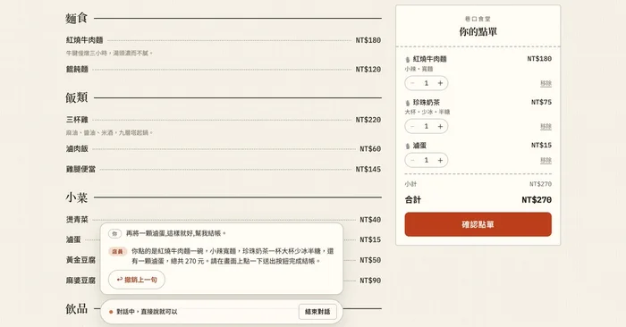
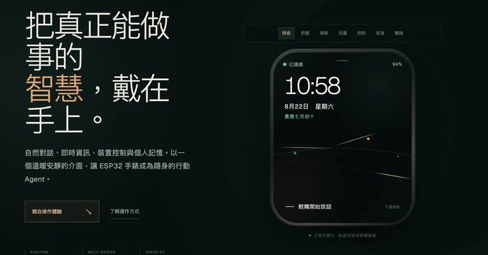

GapCaster
Audio description that fits between lines of dialogue. Runs locally, with evidence for each line and a human review step.
Independent AI engineer · Taiwan
PORTFOLIO / 2026I’m Ted. I build voice AI, agents and onchain safety tools. From system design to working demos, with source code and evidence you can open.
01 / Selected work
Six projects. Real interfaces.
A way to inspect every one.
Audio description that fits between lines of dialogue. Runs locally, with evidence for each line and a human review step.

An AI agent repairs Linux test servers through the console. An independent probe checks reboot, SSH and data integrity.

A public waiting period before Bitcoin spending is co-signed. Cancel a pending request with a phone passkey; recover with a cold key.

A 30-block window to challenge a contract upgrade. Three sentinels simulate attacks and veto rule violations onchain.

Contract upgrades must pass both a cooldown and simulation-based clearance. A Chainlink CRE workflow clears or vetoes the new implementation.

City-temperature markets with Kuru order books, METAR-based settlement and a MetaMask Agent Wallet plugin for agent trading.
03 / Further explorations
Voice, hardware and a view from the Moon.

Voice ordering, with server-validated tool calls and prices.

An ESP32-S3 prototype with a custom Go voice gateway.

A lunar scene built from real elevation data and a Tripo-generated Earth.
Also exploring outcome-based agent payments with Keyhold and onchain red packets with Hongbao.
All repositories04 / How I work
I design the systems and use Claude Code and Codex to write most of the code. I review, test and ship the results, documenting what was measured and what remains untested.
Make the system’s responsibilities clear: what the model can decide, what code must validate and where a person stays in control.
A convincing happy path is a start. The more interesting question is what happens when a tool, a server or a proposed upgrade goes wrong.
Publish demos, source and reproducible checks. Keep prototype results distinct from production claims.
05 / A little context
An independent AI engineer based in Taiwan. My work has moved from algorithmic trading to smart contracts to AI systems. The thread through it all: turn an idea into something you can test.
Have a problem worth solving?
Open to engineering roles, contract work and thoughtful collaborations. Tell me what you’re trying to make work.
Connect on LinkedIn